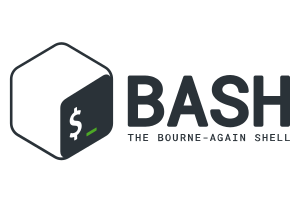

Mes Compétences
BASH

css
Gsuite-google
html

Microsoft Office

linux
Ahmed Aouad, 1 d'Hozier 13002 Marseille, née le 19/01/1979, marié 2 enfants
Aprés une carriére en tant qu'analyste économique,je souhaite désormais me reconvertir de le numérique. Ce secteur plein d'avenir et toujours en constante évolution, me passionne. Parmis les inombrables métiers de ce secteur, c'est la cybersécurité qui m'interresse plus particuliérement. J'ai intégré l'Ecole de la Plateforme Numérique pour concrétiser ce projet.
Chargé d'étude, 10/2002 - 11/2007 Inter-Trade, Paris - CDI
Responsable du développement commercial, 12/2007 - 07/2012 Domasphere, Clamart - CDI
Consultant économique, 10/2012 - 01/2023 Freelance, Paris - Freelance
Maîtrise, Sciences économiques, option économie internationale, 10/2001 - 07/2002 Université Paris 1 Panthéon Sorbonne - Paris - Assez Bien
Licence, Sciences économiques, 10/2000 - 07/2001 Université Paris 1 Panthéon Sorbonne - Paris
DEUG, Sciences économiques, 10/1998 - 07/2000 Université Paris 1 Panthéon Sorbonne
Baccalauréat, économique et social, 07/1998 Lycée Eugene Delacroix - Drancy - Assez bien
BASH
css
Gsuite-google
html
Microsoft Office
linux